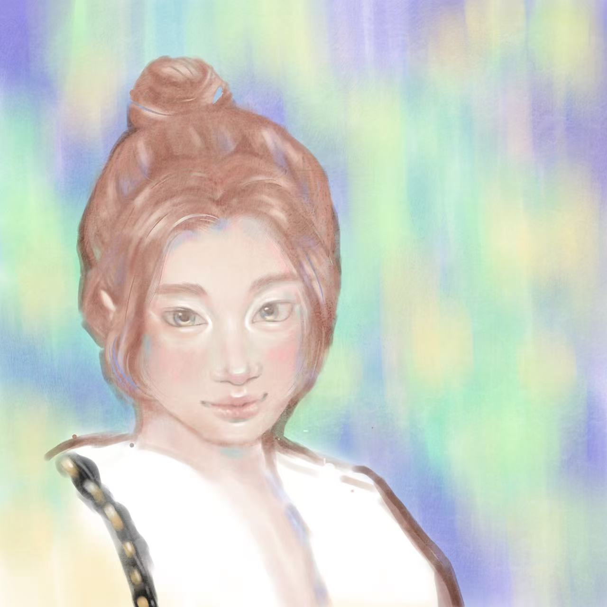

About
I’m a designer, a collector of visual clues, and an untangler of complex problems. A Parsons School of Design graduate, I move between graphic design, interaction, and motion—turning information into stories and ideas into experiences you can touch.
I create work that catches the eye and leaves something on the mind.
I love setting visuals in web design and I enjoy creating illustrations in my free time—giving ideas somewhere to go.
我是设计师，也是视觉线索的收集者、复杂问题的拆解者。毕业于帕森斯设计学院，在平面、交互与动态影像之间游走，喜欢把信息变成故事，把想法变成可以触碰的体验。
我希望作品能抓住目光，也能留下一点值得思考的东西。
我喜欢用网页让我的脑洞落于实地，也喜欢闲暇时间画插画